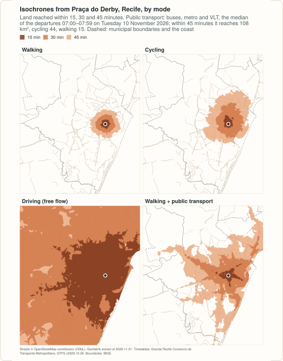
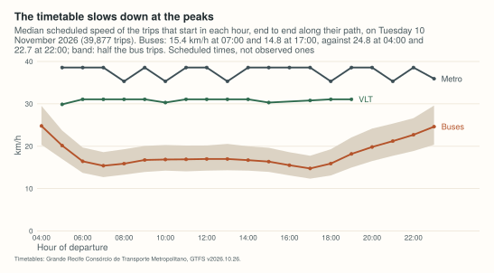
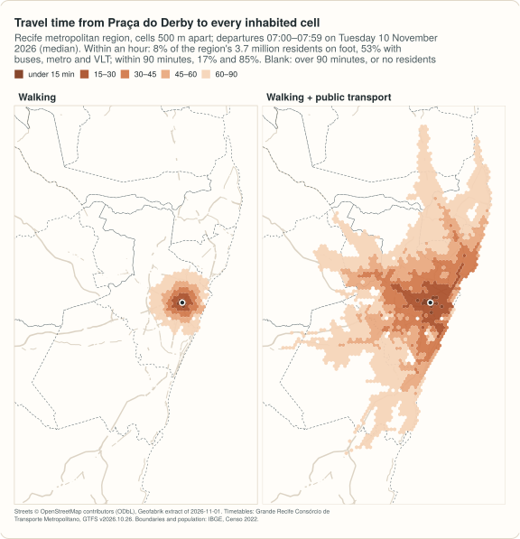
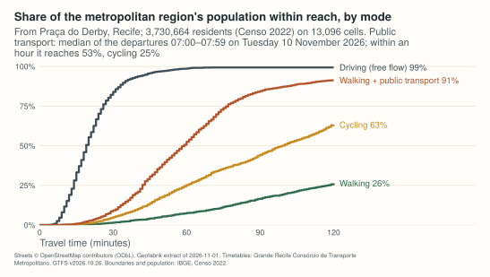
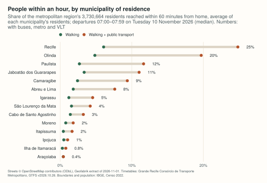
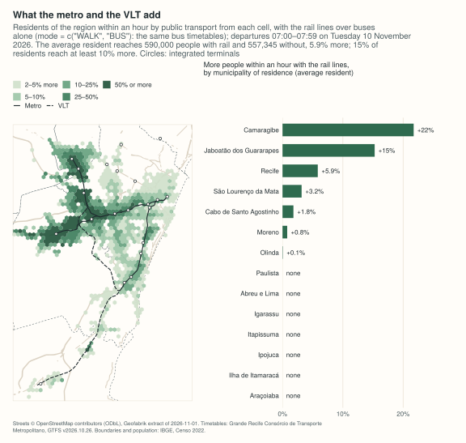
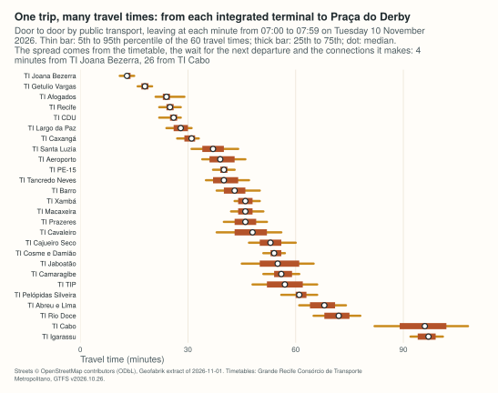
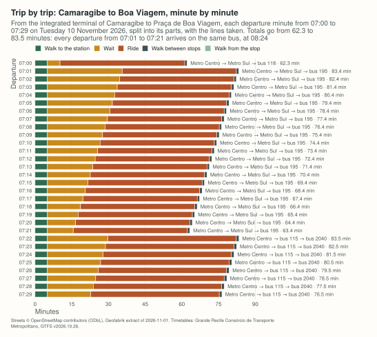
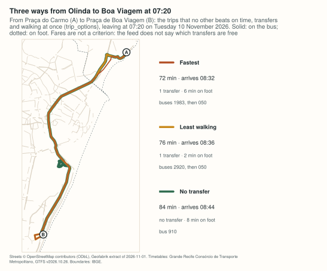

Example: the Recife metropolitan region by public transport
Source:vignettes/articles/recife-metropolitan.Rmd
recife-metropolitan.RmdThe Região Metropolitana do Recife is 14 municipalities and 3.7 million people on the coast of Pernambuco, Brazil. Its buses are run by ten operators under one authority, the Grande Recife Consórcio de Transporte Metropolitano, and meet the metro and the VLT (light rail) of CBTU at integrated terminals. The consortium publishes the timetables of all of them as one GTFS feed. This example builds the region as one network, from that feed and from OpenStreetMap, and asks what a planner would ask of it: how far one gets from the centre by each mode, how many schools and health units are within reach of each resident on foot and by public transport, what the rail lines add, and how much a trip depends on the minute one leaves.
Everything is computed by peabiru; the output shown is what the code prints, computed on 2026-11-13. The Python example repeats the network, the schools and the isochrones, and prints the same numbers.

The data
| Data | Source | Licence |
|---|---|---|
| Public transport |
Grande Recife Consórcio
de Transporte Metropolitano, GTFS feed at
https://www.granderecife.pe.gov.br/gtfs/gtfs.zip,
feed_version v2026.10.26 (files of
2026-10-26; feed_info.txt: 2020-05-01 to 2027-10-26; 38
MB): 395 bus routes of ten operators and, of CBTU’s Metrorec, 3 metro
and 2 VLT routes |
published by the consortium at that address; no licence is stated in the feed |
| Streets |
OpenStreetMap,
extract of the Nordeste region by Geofabrik,
dated 2026-11-01 (445 MB, MD5
93318fcddd85a53e8386eaa93588847c) |
ODbL 1.0 |
| Municipal boundaries | IBGE, malhas municipais (API, version 3) | public data, IBGE |
| Population |
IBGE,
Censo Demográfico 2022, census tracts with their population,
variable v0001 (44 MB for Pernambuco) |
public data, IBGE |
| Schools | INEP, Catálogo de Escolas 2023, with the coordinates of each school,
as published by Ipea’s geobr
(schools_2023, 101 MB for Brazil) |
public data, INEP; geobr is MIT |
| Health units |
CNES, Ministério da
Saúde, through OpenDataSUS
(cnes_estabelecimentos_csv.zip, 57 MB for Brazil, updated
daily; downloaded on 2026-11-12) |
open data, Ministério da Saúde |
The feed is not in this repository and is not redistributed here: download it from the consortium’s address. That address always serves the current file, so a later download is another version of the network and gives other numbers; the checksum below identifies the file used here. The region has no open grid of jobs: Ipea’s Access to Opportunities data covers the municipality of Recife only, so the opportunities here are the public schools and the primary health care units of the registers, and the residents themselves.
The streets, the grid and the units are those of the terrain example, prepared by the functions of site/figures/pernambuco-data.R
as the Recife and Caruaru example
explains step by step: the streets of the 14 municipalities cut with 3
km around them (needs osmium), the census
population on hexagonal cells 500 m apart, the public schools in
operation and the primary health care units (CNES types 1 and 2). site/figures/rmr-data.R
adds the feed: prepare_rmr() uses the file
rmr-data/raw/granderecife-v2026.10.26.zip if it is there,
or else downloads the consortium’s current file, and puts it next to the
street extract in the directory build_network() reads.
library(peabiru)
library(sf)
options(timeout = 3600)
scripts <- Sys.getenv("PEABIRU_FIGURES_DIR", paste0(
"https://raw.githubusercontent.com/StrategicProjects/peabiru-routing/main/site/figures"))
Sys.setenv(PEABIRU_PE_CACHE = "pe-data", PEABIRU_RMR_CACHE = "rmr-data")
source(file.path(scripts, "pernambuco-data.R")) # prepare_city(), fetch()
source(file.path(scripts, "rmr-data.R")) # prepare_rmr(), the feed
rmr <- prepare_rmr()
c(MB = round(file.size(rmr$feed) / 1e6, 1), sha256 = substr(unname(tools::sha256sum(rmr$feed)), 1, 16))
#> MB sha256
#> "38.3" "1b0657fb8f6bcb70"
feed <- rmr_feed_summary(rmr$feed)
str(feed[c("publisher", "version", "agencies", "routes", "stops", "stations", "trips",
"frequencies", "transfer_rules")], give.attr = FALSE)
#> List of 9
#> $ publisher : chr "Grande Recife Consórcio de Transporte Metropolitano"
#> $ version : chr "v2026.10.26"
#> $ agencies : int 11
#> $ routes : int 400
#> $ stops : int 7238
#> $ stations : int 30
#> $ trips : int 87678
#> $ frequencies : logi FALSE
#> $ transfer_rules: int 0
feed$by_mode
#>
#> bus light rail (VLT) metro
#> 395 2 3
feed$fare_prices
#>
#> R$ 15.40 R$ 22.50 R$ 3.00 R$ 4.25 R$ 4.50 R$ 5.80 R$ 8.70
#> 1 1 2 5 385 1 5Timetables only: no line is given by headway
(frequencies.txt), so nothing below is drawn at random. The
30 stations are the 26 integrated terminals and four rail stations.
No fares in this example. The feed has a price for each route (R$ 4.50 on 385 of the 400) and no rule for transfers: the integration at the terminals, where passengers change lines without paying again, is not in it. A fare structure made from the feed would charge every boarding, and results with a fare limit would understate what a fare buys; so travel time, transfers and walking are measured here, and money is not.
The network
threads <- 4 # of the 10 of the laptop; the default is all of them
(seconds <- system.time(network <- build_network(rmr$network, n_threads = threads))[["elapsed"]])
#> [1] 6.998
network
#> <peabiru_network>
#> data path: rmr-data/network
#> streets: 153,798 vertices, 395,862 edges
#> transit: 1 feed(s) (granderecife-v2026.10.26), 7,238 stops, 1,215 patterns, 1,143 services
#> elevation: NONE
nrow(get_gtfs_errors(network))
#> [1] 0
check_transit_availability(network, dates = as.Date("2026-11-10"))
#> # A tibble: 1 × 4
#> date total_services active_services pct_active
#> <date> <int> <int> <dbl>
#> 1 2026-11-10 1143 395 0.346One street extract of 21 MB and one feed, built in 7 seconds on a
laptop busy with other work; the feed has no error.
pct_active is low because the feed keeps a service for each
route and kind of day (weekday, Saturday, Sunday and holiday): on a
Tuesday the weekday ones run.
The analysis is of Tuesday 10 November 2026, leaving at each minute from 07:00 to 07:59; a travel time is the median of those 60 departures unless said otherwise. Walking is at 3.6 km/h and cycling at 12 km/h on streets of low traffic stress, the defaults; driving is at the speed limits, with no congestion.
departure <- as.POSIXct("2026-11-10 07:00:00", tz = "America/Recife")
transit <- c("WALK", "TRANSIT")
cells <- read.csv(file.path(rmr$streets, "cells.csv"), colClasses = c(id = "character"))
cells <- cells[cells$population > 0, ]
schools <- read.csv(file.path(rmr$streets, "schools.csv"), colClasses = c(id = "character"))
health <- read.csv(file.path(rmr$streets, "health.csv"), colClasses = c(id = "character"))
people <- sum(cells$population)
c(cells = nrow(cells), people = round(people), schools = nrow(schools), health_units = nrow(health))
#> cells people schools health_units
#> 13096 3730664 1203 691What the timetable assumes
A timetable is a plan. One written for empty streets would put the
bus through the morning peak at the speed of the small hours, and every
result below would overstate what public transport reaches at 07:00. So,
before routing: the scheduled speed of every trip of the day, the length
of its path (shape_dist_traveled) over the time between its
first and its last stop, by hour of departure.
speeds <- rmr_trip_speeds(rmr$feed, as.Date("2026-11-10"))
speeds$kmh <- speeds$shape_km / (speeds$minutes / 60)
table(speeds$mode)
#>
#> Bus Metro VLT
#> 39463 358 56
hours <- c(4, 7, 12, 17, 22)
kmh <- sapply(split(speeds, speeds$mode), function(m) tapply(m$kmh, m$hour, median)[as.character(hours)])
round(kmh, 1)
#> Bus Metro VLT
#> 4 24.8 NA NA
#> 7 15.4 38.6 31.1
#> 12 17.0 38.6 31.1
#> 17 14.8 38.6 30.8
#> 22 22.7 38.6 NA
# the same path through the day: its running time over its own shortest
bus <- speeds[speeds$mode == "Bus", ]
by_hour <- aggregate(minutes ~ shape_id + hour, data = bus, FUN = median)
by_hour$ratio <- by_hour$minutes / ave(by_hour$minutes, by_hour$shape_id, FUN = min)
round(tapply(by_hour$ratio, by_hour$hour, median)[as.character(hours)], 2)
#> 4 7 12 17 22
#> 1.00 1.50 1.43 1.60 1.00This timetable does slow down: the median bus trip that starts at 07:00 is scheduled at 15.4 km/h and the one at 17:00 at 14.8, against 24.8 at 04:00 and 22.7 at 22:00, and the same path takes 1.5 times its shortest running time of the day at 07:00 and 1.6 times at 17:00. The metro and the VLT keep one speed all day (their medians move with the mix of lines). So the feed carries peak running times, and the access measured below is not that of an empty city. It is still a schedule: these are planned times, not observed ones, and nothing here says how often the plan holds.

Isochrones by mode
From Praça do Derby, between the centre of Recife and its west and
north: 74 of the feed’s 400 routes stop within 400 m of the square on a
weekday. isochrone() traces the areas on a grid of points,
and the points just off the coast are reached from the seafront, so the
polygons are cut at the coast (the municipal boundaries) before their
area is measured. (isochrone() warns when making a traced
polygon valid on the sphere would change its area, and repairs it on the
plane instead; it did for three of these polygons, and the warnings are
left out of the output.)
derby <- data.frame(id = "Praça do Derby", lon = -34.8990, lat = -8.0570)
modes <- list(walk = "WALK", bicycle = "BICYCLE", car = "CAR", transit = transit)
utm <- 31985 # SIRGAS 2000 / UTM zone 25S, in metres
boundaries <- st_read(file.path(rmr$streets, "boundary.geojson"), quiet = TRUE)
land <- st_union(st_make_valid(st_transform(boundaries, utm)))
km2 <- sapply(modes, function(mode) {
iso <- isochrone(network, derby, mode = mode, cutoffs = c(15, 30, 45), zoom = 11,
departure_datetime = departure, time_window = 60, n_threads = threads)
on_land <- st_intersection(st_make_valid(st_geometry(st_transform(iso, utm))), land)
setNames(as.numeric(st_area(on_land)) / 1e6, paste(iso$isochrone, "min"))
})
round(t(km2), 1)
#> 45 min 30 min 15 min
#> walk 15.2 6.6 1.5
#> bicycle 43.5 16.4 2.1
#> car 1453.0 618.4 105.9
#> transit 108.1 34.8 3.8In 45 minutes public transport reaches 108 km² of land, cycling 44 and walking 15; a car in free-flowing traffic reaches 1,453 km², which no car does at 07:00. The figure at the top of the page draws these polygons.
From one point to every cell
The same question on the grid: the travel time from Praça do Derby to
each of the 13,096 inhabited cells, and the residents within reach.
bus is public transport without the metro and the VLT, for
later.
from_derby <- sapply(c(modes, list(bus = c("WALK", "BUS"))), function(mode) {
m <- travel_time_matrix(network, derby, cells, mode = mode, departure_datetime = departure,
time_window = 60, max_trip_duration = 120, n_threads = threads)
m$travel_time_p50[match(cells$id, m$to_id)]
})
within <- function(minutes, limit) {
sum(cells$population[!is.na(minutes) & minutes <= limit]) / people
}
shares <- sapply(c(`30 min` = 30, `60 min` = 60, `90 min` = 90, `120 min` = 120),
function(limit) apply(from_derby, 2, within, limit = limit))
round(100 * shares, 1)
#> 30 min 60 min 90 min 120 min
#> walk 1.6 7.6 16.6 26.4
#> bicycle 5.0 25.2 44.3 63.3
#> car 84.0 98.7 99.4 99.4
#> transit 9.2 52.5 84.5 91.3
#> bus 9.2 50.7 82.5 91.0Within an hour of the square are 53% of the region’s residents by public transport, 25% by bicycle and 8% on foot; within 90 minutes, 85% by public transport. These trips leave the centre in the morning, against the main flow.


Schools, health units and people within reach
Cumulative access from every inhabited cell: the public schools, the primary health care units and the residents of the region reached within 30, 45 and 60 minutes, on foot, by public transport, and by bus alone. One call per mode, with the three kinds of opportunity as columns of one table of destinations.
destinations <- rbind(
data.frame(id = paste0("s", schools$id), lon = schools$lon, lat = schools$lat,
schools = 1, health = 0, population = 0),
data.frame(id = paste0("h", health$id), lon = health$lon, lat = health$lat,
schools = 0, health = 1, population = 0),
data.frame(id = paste0("c", cells$id), lon = cells$lon, lat = cells$lat,
schools = 0, health = 0, population = cells$population))
access_of <- function(mode) {
a <- accessibility(network, cells, destinations,
opportunities_colnames = c("schools", "health", "population"),
mode = mode, departure_datetime = departure, time_window = 60,
percentiles = 50, cutoffs = c(30, 45, 60), max_trip_duration = 60,
n_threads = threads, progress = FALSE)
# one row per cell, one column per opportunity and limit: schools_30, ...
a$what <- paste(a$opportunity, a$cutoff, sep = "_")
wide <- reshape(as.data.frame(a[, c("id", "what", "accessibility")]), idvar = "id",
timevar = "what", direction = "wide")
names(wide) <- sub("accessibility.", "", names(wide), fixed = TRUE)
wide[match(cells$id, wide$id), ]
}
seconds <- system.time(
access <- lapply(list(walk = "WALK", transit = transit, bus = c("WALK", "BUS")), access_of)
)[["elapsed"]]
c(origins = nrow(cells), destinations = nrow(destinations), seconds = round(seconds))
#> origins destinations seconds
#> 13096 14990 34
average <- function(column) {
sapply(access[c("walk", "transit")], function(a) weighted.mean(a[[column]], cells$population))
}
round(t(sapply(c("schools_30", "schools_45", "health_30", "health_45", "population_60"), average)), 1)
#> walk transit
#> schools_30 12.8 24.4
#> schools_45 26.5 79.4
#> health_30 6.2 11.7
#> health_45 12.7 40.3
#> population_60 150756.9 590000.0
none <- function(column) {
sapply(access[c("walk", "transit")], function(a) weighted.mean(a[[column]] == 0, cells$population))
}
round(100 * t(sapply(c("schools_30", "health_30"), none)), 1)
#> walk transit
#> schools_30 3.1 2.8
#> health_30 5.0 3.6The average resident has 13 public schools within half an hour’s walk and 24 within half an hour by public transport; with 45 minutes, 26 and 79. For primary health care units the numbers are 6 and 12 in 30 minutes, 13 and 40 in 45. The gain grows with the time allowed: public transport doubles the count in half an hour and triples it in three quarters. The last table is the share of residents with none within 30 minutes: 3.1% have no public school within half an hour’s walk and 2.8% none by public transport either; for a health unit, 5.0% and 3.6%.
On the laptop this was written on (Apple M2 Pro, 4 of its 10 threads, busy with other work at the time) the three calls, each from 13,096 origins to 14,990 destinations, took 34 seconds together.

By municipality of residence, the share of the region’s residents
within an hour (the population of each cell is split by municipality in
cells_muni.csv):
names_of <- c("2611606" = "Recife", "2609600" = "Olinda", "2607901" = "Jaboatão dos Guararapes",
"2610707" = "Paulista", "2603454" = "Camaragibe", "2613701" = "São Lourenço da Mata",
"2602902" = "Cabo de Santo Agostinho", "2607208" = "Ipojuca", "2609402" = "Moreno",
"2606804" = "Igarassu", "2600054" = "Abreu e Lima", "2607752" = "Itapissuma",
"2607604" = "Ilha de Itamaracá", "2601052" = "Araçoiaba")
by_muni <- read.csv(file.path(rmr$streets, "cells_muni.csv"),
colClasses = c(id = "character", code = "character"))
k <- match(by_muni$id, cells$id)
by_muni <- by_muni[!is.na(k), ]
k <- k[!is.na(k)]
for (m in names(access)) by_muni[[m]] <- access[[m]]$population_60[k]
municipalities <- do.call(rbind, lapply(split(by_muni, by_muni$code), function(r) {
data.frame(municipality = names_of[[r$code[1]]], residents = round(sum(r$population)),
walk = weighted.mean(r$walk, r$population), bus = weighted.mean(r$bus, r$population),
transit = weighted.mean(r$transit, r$population))
}))
municipalities <- municipalities[order(-municipalities$transit), ]
municipalities$share <- round(100 * municipalities$transit / people, 1)
municipalities$rail_gain <- round(100 * (municipalities$transit / municipalities$bus - 1), 1)
print(transform(municipalities, walk = round(walk), bus = round(bus), transit = round(transit)),
row.names = FALSE)
#> municipality residents walk bus transit share rail_gain
#> Recife 1488924 226475 874573 925812 24.8 5.9
#> Olinda 349974 180841 734408 734832 19.7 0.1
#> Paulista 342160 100084 434679 434679 11.7 0.0
#> Jaboatão dos Guararapes 644037 124999 356771 411342 11.0 15.3
#> Camaragibe 147771 90217 287313 349820 9.4 21.8
#> Abreu e Lima 98462 68258 284454 284454 7.6 0.0
#> Igarassu 115196 45289 169416 169416 4.5 0.0
#> São Lourenço da Mata 111249 59041 151898 156725 4.2 3.2
#> Cabo de Santo Agostinho 203440 52909 118551 120704 3.2 1.8
#> Moreno 55292 29018 67326 67851 1.8 0.8
#> Itapissuma 31320 16436 62106 62106 1.7 0.0
#> Ipojuca 99057 18917 38969 38969 1.0 0.0
#> Ilha de Itamaracá 24540 11096 29454 29454 0.8 0.0
#> Araçoiaba 19243 16319 16546 16546 0.4 0.0
What the metro and the VLT add
mode chooses the kinds of public transport:
c("WALK", "BUS") is the same network without the rail
lines. The bus timetables are the same in both calls, so this measures
what the rail lines add to the service as it runs, not what the bus
network would be without them. rail_gain, above, is that
difference for the average resident of each municipality; for the
region:
with_rail <- access$transit$population_60
bus_only <- access$bus$population_60
c(with_rail = weighted.mean(with_rail, cells$population),
bus_only = weighted.mean(bus_only, cells$population))
#> with_rail bus_only
#> 590000.0 557344.5
gain <- ifelse(bus_only > 0, with_rail / bus_only - 1, 0)
round(100 * c(`10% more or over` = weighted.mean(gain >= 0.10, cells$population),
`25% more or over` = weighted.mean(gain >= 0.25, cells$population)), 1)
#> 10% more or over 25% more or over
#> 14.7 7.7The average resident reaches 590,000 people within an hour with the rail lines and 557,345 without, 5.9% more. The gain is where the lines are: 22% in Camaragibe and 15% in Jaboatão dos Guararapes, at the ends of the two branches of the Centro line, and nothing in the north of the region (Olinda, Paulista, Abreu e Lima, Igarassu), which the rail does not reach.

How much a trip varies
A travel time by public transport depends on the minute one leaves.
With percentiles, the matrix gives the spread over the
departure window: here, from each of the 26 integrated terminals to
Praça do Derby, the 5th, 25th, 50th, 75th and 95th percentiles of the 60
travel times.
stops <- feed_table(rmr$feed, "stops")
terminals <- stops[stops$location_type == "1" & grepl("^Ti ", stops$stop_name), ]
terminals <- data.frame(id = sub(" - [0-9]+$", "", terminals$stop_name),
lon = as.numeric(terminals$stop_lon), lat = as.numeric(terminals$stop_lat))
p <- travel_time_matrix(network, terminals, derby, mode = transit, departure_datetime = departure,
time_window = 60, percentiles = c(5, 25, 50, 75, 95),
max_trip_duration = 180, n_threads = threads)
p <- as.data.frame(p[order(p$travel_time_p50, p$travel_time_p95), ])
names(p) <- sub("travel_time_", "", names(p))
print(p[, c("from_id", "p05", "p25", "p50", "p75", "p95")], row.names = FALSE)
#> from_id p05 p25 p50 p75 p95
#> Ti Joana Bezerra 11 13 13 14 15
#> Ti Getulio Vargas 16 17 18 19 20
#> Ti Afogados 21 23 24 25 29
#> Ti Recife 22 24 25 26 28
#> Ti Cdu 22 25 26 27 28
#> Ti Largo Da Paz 24 26 28 30 31
#> Ti Caxangá 27 29 31 32 33
#> Ti Santa Luzia 31 34 37 40 44
#> Ti Aeroporto 34 36 39 43 46
#> Ti Pe-15 37 39 40 41 43
#> Ti Tancredo Neves 35 37 40 44 47
#> Ti Barro 38 40 43 46 50
#> Ti Xambá 43 44 46 48 50
#> Ti Macaxeira 42 44 46 48 51
#> Ti Prazeres 40 43 46 49 52
#> Ti Cavaleiro 38 43 48 52 56
#> Ti Cajueiro Seco 47 50 53 56 60
#> Ti Cosme E Damião 51 53 54 56 57
#> Ti Jaboatão 45 50 55 61 65
#> Ti Camaragibe 51 54 56 59 61
#> Ti Tip 48 52 57 62 66
#> Ti Pelópidas Silveira 56 60 61 63 66
#> Ti Abreu E Lima 61 64 68 71 74
#> Ti Rio Doce 65 68 72 75 78
#> Ti Cabo 82 89 96 102 108
#> Ti Igarassu 92 94 97 99 101
expanded_travel_time_matrix() shows where the spread
comes from: one row per departure minute, with the lines taken and, with
breakdown = TRUE, the parts of the trip. From the terminal
of Camaragibe, the end of a metro line, to Praça de Boa Viagem, by the
beach in the south of Recife:
camaragibe <- terminals[terminals$id == "Ti Camaragibe", ]
boa_viagem <- data.frame(id = "Praça de Boa Viagem", lon = -34.9014, lat = -8.1317)
e <- expanded_travel_time_matrix(network, camaragibe, boa_viagem, mode = transit,
departure_datetime = departure, time_window = 30,
breakdown = TRUE, n_threads = threads)
e <- as.data.frame(e)
e[c(1:3, 21:24), c("departure_time", "access_time", "wait_time", "ride_time", "transfer_time",
"egress_time", "routes", "total_time")]
#> departure_time access_time wait_time ride_time transfer_time egress_time
#> 1 07:00:00 5 5.2 51.0 1.0 0.1
#> 2 07:01:00 5 30.6 46.7 1.0 0.1
#> 3 07:02:00 5 29.6 46.7 1.0 0.1
#> 21 07:20:00 5 11.6 46.7 1.0 0.1
#> 22 07:21:00 5 10.6 46.7 1.0 0.1
#> 23 07:22:00 5 24.8 52.5 1.1 0.1
#> 24 07:23:00 5 23.8 52.5 1.1 0.1
#> routes total_time
#> 1 METRO_CENTRO1|METRO_SUL|118 62.3
#> 2 METRO_CENTRO1|METRO_SUL|195 83.4
#> 3 METRO_CENTRO1|METRO_SUL|195 82.4
#> 21 METRO_CENTRO1|METRO_SUL|195 64.4
#> 22 METRO_CENTRO1|METRO_SUL|195 63.4
#> 23 METRO_CENTRO1|115|2040 83.5
#> 24 METRO_CENTRO1|115|2040 82.5
range(e$total_time)
#> [1] 62.3 83.5Leaving at 07:00 the trip takes 62 minutes, and one minute later 83: the two metro rides are the same, and the last leg is a bus that the 07:00 departure catches and the 07:01 does not. Every departure from 07:01 to 07:21 arrives on the same bus; the ride hardly changes, the wait does.

The options of one trip
trip_options() lists the trips that no other beats on
every criterion at once. From Praça do Carmo, at the foot of the
historic centre of Olinda, to Praça de Boa Viagem, leaving at 07:20,
with time, transfers and walking as criteria (no "FARE":
see above):
carmo <- data.frame(id = "Praça do Carmo, Olinda", lon = -34.8485, lat = -8.0170)
res <- trip_options(network, carmo, boa_viagem,
departure_datetime = as.POSIXct("2026-11-10 07:20:00", tz = "America/Recife"),
time_window = 1, criteria = c("TIME", "TRANSFERS", "WALK"),
n_threads = threads, progress = FALSE)
op <- as.data.frame(res$options)
op[, c("option", "total_time", "transfers", "walk_time", "arrival_time", "description")]
#> option total_time transfers walk_time arrival_time description
#> 1 1 72.1 1 5.6 08:32:06 WALK > BUS 1983 > BUS 050 > WALK
#> 2 2 76.1 1 2.1 08:36:06 WALK > BUS 2920 > BUS 050 > WALK
#> 3 3 84.2 0 8.3 08:44:10 WALK > BUS 910 > WALKThe fastest takes 72 minutes with one transfer; a second pair of
buses takes 76 minutes with 2 minutes on foot instead of 6; a single
bus, with no transfer, takes 84. res$itineraries has the
legs of each option, as an sf of lines.

What is measured, and what is not
- Scheduled times, not observed ones. The timetable of the feed, as published: its buses run slower at the peaks (see above), but delays, bunching, crowding and trips that do not run are not in it.
- One day, one hour. Departures from 07:00 to 07:59 on Tuesday 10 November 2026. Trips from Praça do Derby leave the centre against the morning flow; the access tables are from every home.
- No fares. The feed has no rule for the integration at the terminals, so nothing here is limited by money or counts it.
- Rail included, as scheduled. The metro and the VLT are in the feed with their timetables; “buses only” removes them from the routing and leaves the bus timetables as they are.
- Flat ground. The network was built without an elevation raster. The terrain example measures what the hills of the region add on foot: two minutes or more to the nearest health unit for 8% of the residents.
-
Driving is free flow, at the speed limits, with no
congestion and no parking: an upper bound, drawn for comparison only.
Cycling uses streets of low traffic stress
(
max_lts = 2). - Cells, not addresses. Every trip starts and ends at the centre of a hexagonal cell, 500 m from its neighbours, linked to the nearest street; schools and health units are at the coordinates of their registers, and the ones without coordinates are left out.
- Public schools and primary health care units only, of 2023 and of November 2026; residents of the Censo 2022; no jobs (no open grid of jobs covers the region).
- The feed, as it is. No licence is stated in it; it is used here as the consortium publishes it and is not redistributed.
Variations
-
Another hour or day. Change
departure;check_transit_availability()says what runs on a date. -
Only some modes.
mode = c("WALK", "SUBWAY", "TRAM")routes on the rail lines alone;mode_egress = "BICYCLE"ends the trip by bicycle. -
Slopes.
build_network(elevation = "TOBLER")with a raster in the directory, as in the terrain example. -
Large matrices on disk.
output_dirwrites one CSV file per origin.
Sources
Timetables: Grande Recife Consórcio de Transporte Metropolitano, GTFS
feed v2026.10.26, as published at
https://www.granderecife.pe.gov.br/gtfs/gtfs.zip. Map data
© OpenStreetMap contributors, under the ODbL. Boundaries and population
© IBGE (Censo 2022). Schools: INEP, Catálogo de Escolas 2023, through
geobr. Health units: CNES, Ministério da Saúde. The figures are drawn by
site/figures/rmr.R
from the same results.